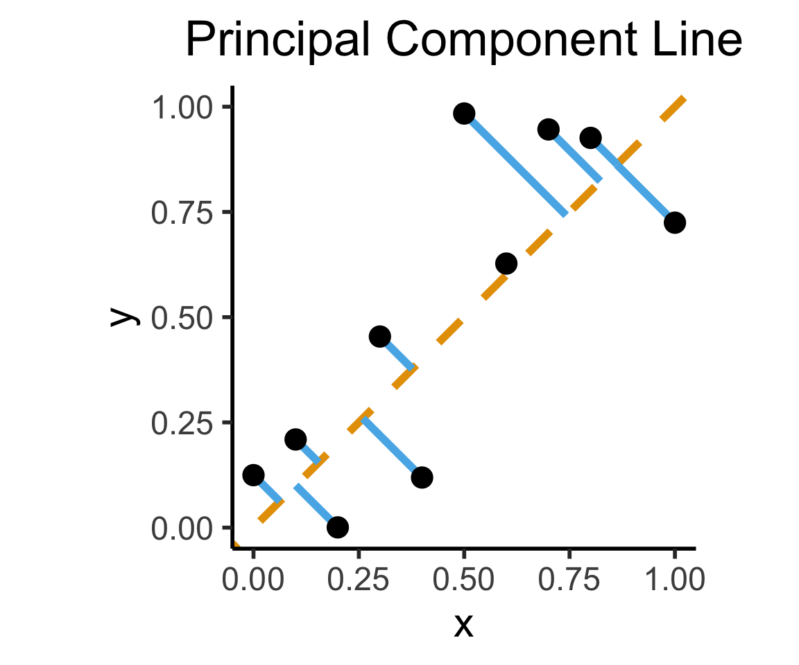
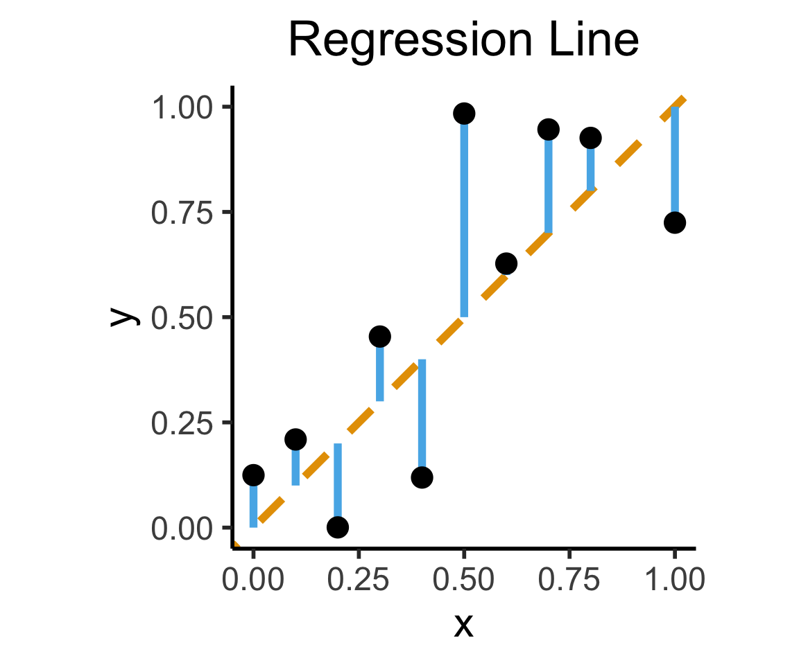
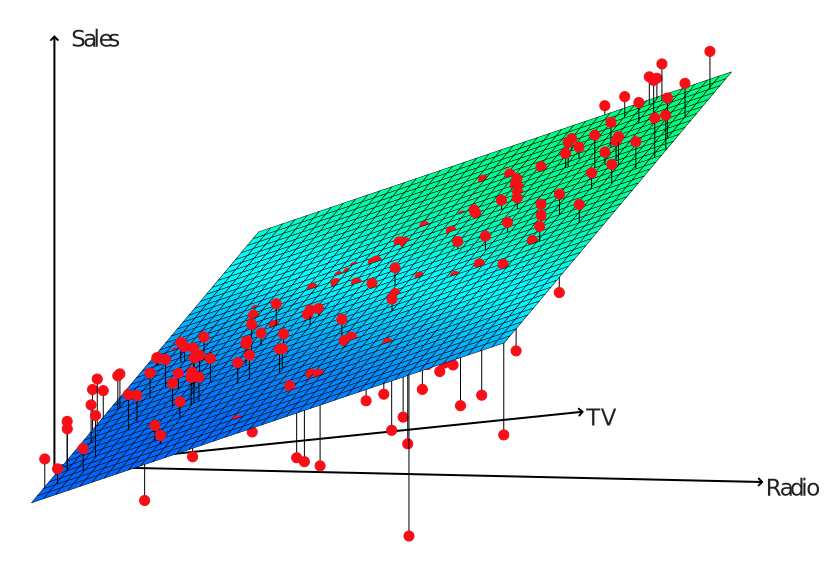
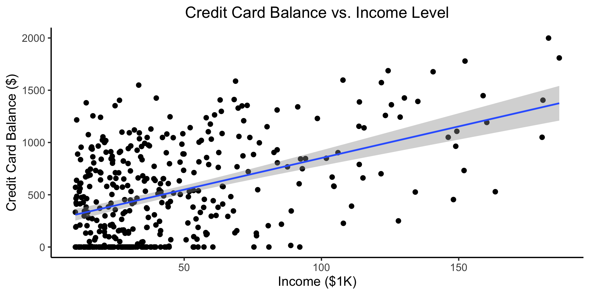
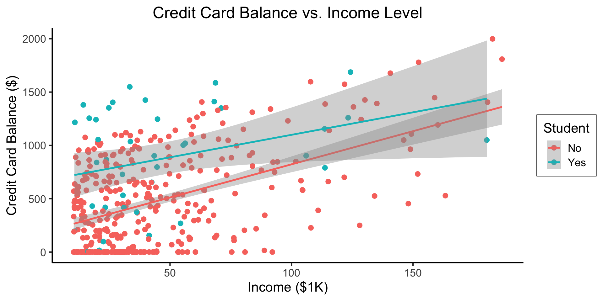
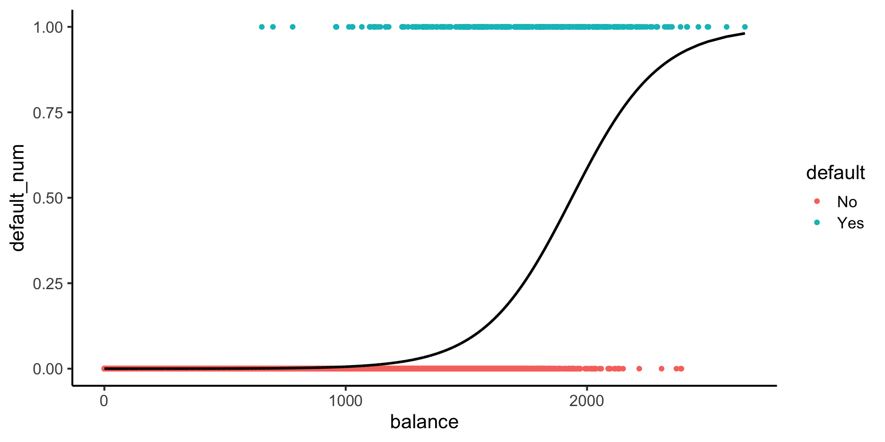

Week 3: Getting Fancy with Regression
DSAN 5300: Statistical Learning
Spring 2025, Georgetown University
Monday, January 27, 2025
Recap Linear Regression
What happens to my dependent variable \(Y\) when my independent variable \(X\) changes by 1 unit?
Whenever you carry out a regression, keep the goal in the front of your mind:
The Goal of Regression
Find a line \(\widehat{y} = mx + b\) that best predicts \(Y\) for given values of \(X\)
\[ \DeclareMathOperator*{\argmax}{argmax} \DeclareMathOperator*{\argmin}{argmin} \newcommand{\bigexp}[1]{\exp\mkern-4mu\left[ #1 \right]} \newcommand{\bigexpect}[1]{\mathbb{E}\mkern-4mu \left[ #1 \right]} \newcommand{\definedas}{\overset{\text{defn}}{=}} \newcommand{\definedalign}{\overset{\phantom{\text{defn}}}{=}} \newcommand{\eqeventual}{\overset{\text{eventually}}{=}} \newcommand{\Err}{\text{Err}} \newcommand{\expect}[1]{\mathbb{E}[#1]} \newcommand{\expectsq}[1]{\mathbb{E}^2[#1]} \newcommand{\fw}[1]{\texttt{#1}} \newcommand{\given}{\mid} \newcommand{\green}[1]{\color{green}{#1}} \newcommand{\heads}{\outcome{heads}} \newcommand{\iid}{\overset{\text{\small{iid}}}{\sim}} \newcommand{\lik}{\mathcal{L}} \newcommand{\loglik}{\ell} \DeclareMathOperator*{\maximize}{maximize} \DeclareMathOperator*{\minimize}{minimize} \newcommand{\mle}{\textsf{ML}} \newcommand{\nimplies}{\;\not\!\!\!\!\implies} \newcommand{\orange}[1]{\color{orange}{#1}} \newcommand{\outcome}[1]{\textsf{#1}} \newcommand{\param}[1]{{\color{purple} #1}} \newcommand{\pgsamplespace}{\{\green{1},\green{2},\green{3},\purp{4},\purp{5},\purp{6}\}} \newcommand{\prob}[1]{P\left( #1 \right)} \newcommand{\purp}[1]{\color{purple}{#1}} \newcommand{\sign}{\text{Sign}} \newcommand{\spacecap}{\; \cap \;} \newcommand{\spacewedge}{\; \wedge \;} \newcommand{\tails}{\outcome{tails}} \newcommand{\Var}[1]{\text{Var}[#1]} \newcommand{\bigVar}[1]{\text{Var}\mkern-4mu \left[ #1 \right]} \]
What Regression is Not
Final reminder that Regression, PCA have different goals!
If your goal was to, e.g., generate realistic \((x,y)\) pairs, then (mathematically) you want PCA! Roughly:
\[ \widehat{f}_{\text{PCA}} = \min_{\mathbf{c}}\left[ \sum_{i=1}^{n} (\widehat{x}_i(\mathbf{c}) - x_i)^2 + (\widehat{y}_i(\mathbf{c}) - y_i)^2 \right] \]
Our goal is a good predictor of \(Y\):
\[ \widehat{f}_{\text{Reg}} = \min_{\beta_0, \beta_1}\left[ \sum_{i=1}^{n} (\widehat{y}_i(\beta) - y_i)^2 \right] \]
How Do We Define “Best”?
- Intuitively, two different ways to measure how well a line fits the data:
Code
library(tidyverse)
set.seed(5321)
N <- 11
x <- seq(from = 0, to = 1, by = 1 / (N - 1))
y <- x + rnorm(N, 0, 0.2)
mean_y <- mean(y)
spread <- y - mean_y
df <- tibble(x = x, y = y, spread = spread)
ggplot(df, aes(x=x, y=y)) +
geom_abline(slope=1, intercept=0, linetype="dashed", color=cbPalette[1], linewidth=g_linewidth*2) +
geom_segment(xend=(x+y)/2, yend=(x+y)/2, linewidth=g_linewidth*2, color=cbPalette[2]) +
geom_point(size=g_pointsize) +
coord_equal() +
xlim(0, 1) + ylim(0, 1) +
dsan_theme("half") +
labs(
title = "Principal Component Line"
)
ggplot(df, aes(x=x, y=y)) +
geom_abline(slope=1, intercept=0, linetype="dashed", color=cbPalette[1], linewidth=g_linewidth*2) +
geom_segment(xend=x, yend=x, linewidth=g_linewidth*2, color=cbPalette[2]) +
geom_point(size=g_pointsize) +
coord_equal() +
xlim(0, 1) + ylim(0, 1) +
dsan_theme("half") +
labs(
title = "Regression Line"
)

Multiple Linear Regression (MLR)
Multiple Linear Regression (MLR) Model
- Notation: \(x_{i,j}\) = value of independent variable \(j\) for person/observation \(i\)
- \(M\) = total number of independent variables
\[ \widehat{y}_i = \beta_0 + \beta_1x_{i,1} + \beta_2x_{i,2} + \cdots + \beta_M x_{i,M} \]
- \(\beta_j\) interpretation: a one-unit increase in \(x_{i,j}\) is associated with a \(\beta_j\) unit increase in \(y_i\), holding all other independent variables constant
Visualizing Multiple Linear Regression
(ISLR, Fig 3.5): A pronounced non-linear relationship. Positive residuals (visible above the surface) tend to lie along the 45-degree line, where budgets are split evenly. Negative residuals (most not visible) tend to be away from this line, where budgets are more lopsided.
Interpreting MLR
Code
==============================================================================
coef std err t P>|t| [0.025 0.975]
------------------------------------------------------------------------------
Intercept 2.9389 0.312 9.422 0.000 2.324 3.554
TV 0.0458 0.001 32.809 0.000 0.043 0.049
radio 0.1885 0.009 21.893 0.000 0.172 0.206
newspaper -0.0010 0.006 -0.177 0.860 -0.013 0.011
==============================================================================- Holding
radioandnewspaperspending constant…- An increase of $1K in spending on
TVadvertising is associated with - An increase in sales of about 46 units
- An increase of $1K in spending on
- Holding
TVandnewspaperspending constant…- An increase of $1K in spending on
radioadvertising is associated with - An increase in sales of about 189 units
- An increase of $1K in spending on
But Wait…
Results: Ordinary least squares
=================================================================
Model: OLS Adj. R-squared: 0.896
Dependent Variable: sales AIC: 780.3622
Date: 2025-01-30 02:57 BIC: 793.5555
No. Observations: 200 Log-Likelihood: -386.18
Df Model: 3 F-statistic: 570.3
Df Residuals: 196 Prob (F-statistic): 1.58e-96
R-squared: 0.897 Scale: 2.8409
------------------------------------------------------------------
Coef. Std.Err. t P>|t| [0.025 0.975]
------------------------------------------------------------------
Intercept 2.9389 0.3119 9.4223 0.0000 2.3238 3.5540
TV 0.0458 0.0014 32.8086 0.0000 0.0430 0.0485
radio 0.1885 0.0086 21.8935 0.0000 0.1715 0.2055
newspaper -0.0010 0.0059 -0.1767 0.8599 -0.0126 0.0105
-----------------------------------------------------------------
Omnibus: 60.414 Durbin-Watson: 2.084
Prob(Omnibus): 0.000 Jarque-Bera (JB): 151.241
Skew: -1.327 Prob(JB): 0.000
Kurtosis: 6.332 Condition No.: 454
=================================================================
Notes:
[1] Standard Errors assume that the covariance matrix of the
errors is correctly specified.Code
Results: Ordinary least squares
==================================================================
Model: OLS Adj. R-squared: 0.047
Dependent Variable: sales AIC: 1220.6714
Date: 2025-01-30 02:57 BIC: 1227.2680
No. Observations: 200 Log-Likelihood: -608.34
Df Model: 1 F-statistic: 10.89
Df Residuals: 198 Prob (F-statistic): 0.00115
R-squared: 0.052 Scale: 25.933
-------------------------------------------------------------------
Coef. Std.Err. t P>|t| [0.025 0.975]
-------------------------------------------------------------------
Intercept 12.3514 0.6214 19.8761 0.0000 11.1260 13.5769
newspaper 0.0547 0.0166 3.2996 0.0011 0.0220 0.0874
------------------------------------------------------------------
Omnibus: 6.231 Durbin-Watson: 1.983
Prob(Omnibus): 0.044 Jarque-Bera (JB): 5.483
Skew: 0.330 Prob(JB): 0.064
Kurtosis: 2.527 Condition No.: 65
==================================================================
Notes:
[1] Standard Errors assume that the covariance matrix of the
errors is correctly specified.- MLR results can be drastically different from SLR results, because of correlations (next slide)
- This is a good thing! It’s how we’re able to control for confounding variables!
Correlations Among Features
TV radio newspaper sales
TV 1.000000 0.054809 0.056648 0.782224
radio 0.054809 1.000000 0.354104 0.576223
newspaper 0.056648 0.354104 1.000000 0.228299
sales 0.782224 0.576223 0.228299 1.000000- Observe how \(\text{cor}(\texttt{radio}, \texttt{newspaper}) \approx 0.35\)
- In markets where we spend more on
radioour sales will tend to be higher… - Corr matrix \(\implies\) we spend more on
newspaperin those same markets… - In SLR which only examines
salesvs.newspaper, we (correctly!) observe that higher values ofnewspaperare associated with higher values ofsales… - In essence,
newspaperadvertising is a surrogate forradioadvertising \(\implies\) in our SLR,newspaper“gets credit” for the association betweenradioandsales
Another MLR Superpower: Incorporating Categorical Vars
\[ \begin{align*} Y &= \beta_0 + \beta_1 \times \texttt{income} \\ &\phantom{Y} \end{align*} \]
Code
credit_df <- read_csv("assets/Credit.csv")
credit_plot <- credit_df |> ggplot(aes(x=Income, y=Balance)) +
geom_point(size=0.5*g_pointsize) +
geom_smooth(method='lm', formula="y ~ x", linewidth=1) +
theme_dsan() +
labs(
title="Credit Card Balance vs. Income Level",
x="Income ($1K)",
y="Credit Card Balance ($)"
)
credit_plot
\[ \begin{align*} Y = &\beta_0 + \beta_1 \times \texttt{income} + \beta_2 \times \texttt{Student} \\ &+ \beta_3 \times (\texttt{Student} \times \texttt{Income}) \end{align*} \]
Code

- Why do we need the \(\texttt{Student} \times \texttt{Income}\) term?
- Understanding this setup will open up a vast array of possibilities for regression üòé
- (Dear future Jeff, let’s go through this on the board! Sincerely, past Jeff)
Logistic Regression
From MLR to Logistic Regression
- As DSAN students, you know that we’re still sweeping classification under the rug!
- We saw how to include binary/multiclass covariates, but what if the actual thing we’re trying to predict is binary?
- The wrong approach is the “Linear Probability Model”:
\[ \Pr(Y \mid X) = \beta_0 + \beta_1 X + \varepsilon \]
Credit Default
Code
library(tidyverse)
library(ggExtra)
default_df <- read_csv("assets/Default.csv") |>
mutate(default_num = ifelse(default=="Yes",1,0))
default_plot <- default_df |> ggplot(aes(x=balance, y=income, color=default, shape=default)) +
geom_point(alpha=0.6) +
theme_classic(base_size=16) +
labs(
title="Credit Defaults by Income and Account Balance",
x = "Account Balance",
y = "Income"
)
default_mplot <- default_plot |> ggMarginal(type="boxplot", groupColour=FALSE, groupFill=TRUE)
default_mplot
Lines vs. Sigmoids(!)
Here’s what lines look like for this dataset:
Here’s what sigmoids look like:
Code
library(tidyverse)
logistic_model <- glm(default_num ~ balance, family=binomial(link='logit'),data=default_df)
default_df$predictions <- predict(logistic_model, newdata = default_df, type = "response")
my_sigmoid <- function(x) 1 / (1+exp(-x))
default_df |> ggplot(aes(x=balance, y=default_num)) +
#stat_function(fun=my_sigmoid) +
geom_point(aes(color=default)) +
geom_line(
data=default_df,
aes(x=balance, y=predictions),
linewidth=1
) +
theme_classic(base_size=16)
\[ \Pr(Y \mid X) = \beta_0 + \beta_1 X + \varepsilon \]
\[ \log\underbrace{\left[ \frac{\Pr(Y \mid X)}{1 - \Pr(Y \mid X)} \right]}_{\mathclap{\smash{\text{Odds Ratio}}}} = \beta_0 + \beta_1 X + \varepsilon \]
But Let’s Derive This!
\[ \begin{align*} \Pr(Y \mid X) &= \frac{e^{\beta_0 + \beta_1X}}{1 + e^{\beta_0 + \beta_1X}} \\ \iff \underbrace{\frac{\Pr(Y \mid X)}{1 - \Pr(Y \mid X)}}_{\text{Odds Ratio}} &= e^{\beta_0 + \beta_1X} \\ \iff \underbrace{\log\left[ \frac{\Pr(Y \mid X)}{1 - \Pr(Y \mid X)} \right]}_{\text{Log-Odds Ratio}} &= \beta_0 + \beta_1X \end{align*} \]
Now How Will We Ever Find “Good” Parameter Values?
- If only we had some sort of estimator… One that would choose \(\beta_0\) and \(\beta_1\) so as to maximize the likelihood of seeing some data…
\[ L(\beta_0, \beta_1) = \prod_{\{i \mid y_i = 1\}}\Pr(Y = 1 \mid X) \prod_{\{i \mid y_i = 0\}}(1-\Pr(Y = 1 \mid X)) \]
- (Much more on this later üò∏)
The Interpretation Problem
Call:
glm(formula = default_num ~ balance, family = binomial(link = "logit"),
data = default_df)
Coefficients:
Estimate Std. Error z value Pr(>|z|)
(Intercept) -10.6513306 0.3611574 -29.49 <0.0000000000000002 ***
balance 0.0054989 0.0002204 24.95 <0.0000000000000002 ***
---
Signif. codes: 0 '***' 0.001 '**' 0.01 '*' 0.05 '.' 0.1 ' ' 1
(Dispersion parameter for binomial family taken to be 1)
Null deviance: 2920.6 on 9999 degrees of freedom
Residual deviance: 1596.5 on 9998 degrees of freedom
AIC: 1600.5
Number of Fisher Scoring iterations: 8- Slope is no longer the same everywhere! It varies across different values of \(x\)…
- Let’s brainstorm some possible ways to make our lives easier when interpreting these coefficients!
References
Appendix: MLR in R
Code
Call:
lm(formula = sales ~ TV + radio + newspaper, data = ad_df)
Residuals:
Min 1Q Median 3Q Max
-8.8277 -0.8908 0.2418 1.1893 2.8292
Coefficients:
Estimate Std. Error t value Pr(>|t|)
(Intercept) 2.938889 0.311908 9.422 <0.0000000000000002 ***
TV 0.045765 0.001395 32.809 <0.0000000000000002 ***
radio 0.188530 0.008611 21.893 <0.0000000000000002 ***
newspaper -0.001037 0.005871 -0.177 0.86
---
Signif. codes: 0 '***' 0.001 '**' 0.01 '*' 0.05 '.' 0.1 ' ' 1
Residual standard error: 1.686 on 196 degrees of freedom
Multiple R-squared: 0.8972, Adjusted R-squared: 0.8956
F-statistic: 570.3 on 3 and 196 DF, p-value: < 0.00000000000000022- Holding
radioandnewspaperspending constant…- An increase of $1K in spending on
TVadvertising is associated with - An increase in sales of about 46 units
- An increase of $1K in spending on
- Holding
TVandnewspaperspending constant…- An increase of $1K in spending on
radioadvertising is associated with - An increase in sales of about 189 units
- An increase of $1K in spending on
DSAN 5300-01 Week 3: Fancier Linear Regression